สถานที่แนะนำ
1.แปลงกังหัน
แหล่งเช็กอินยอดฮิตของนักศึกษาและนักท่องเที่ยว บรรยากาศโล่ง โปร่ง ลมเย็น เหมาะกับการถ่ายรูปสุด ๆ โดยเฉพาะช่วงเย็นที่พระอาทิตย์กำลังตก จะได้วิวท้องฟ้าสวยมาก
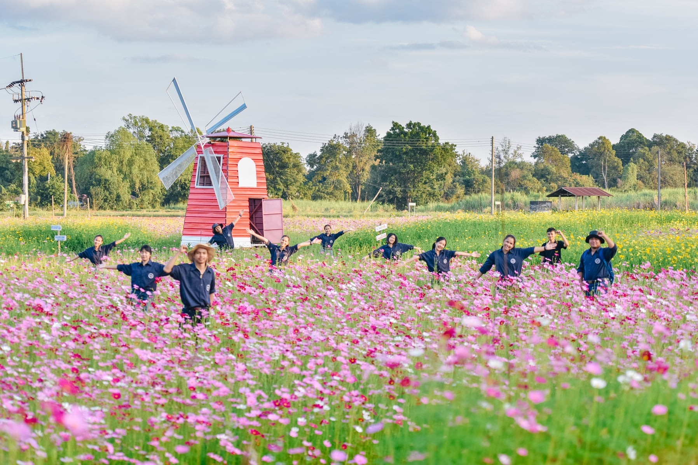 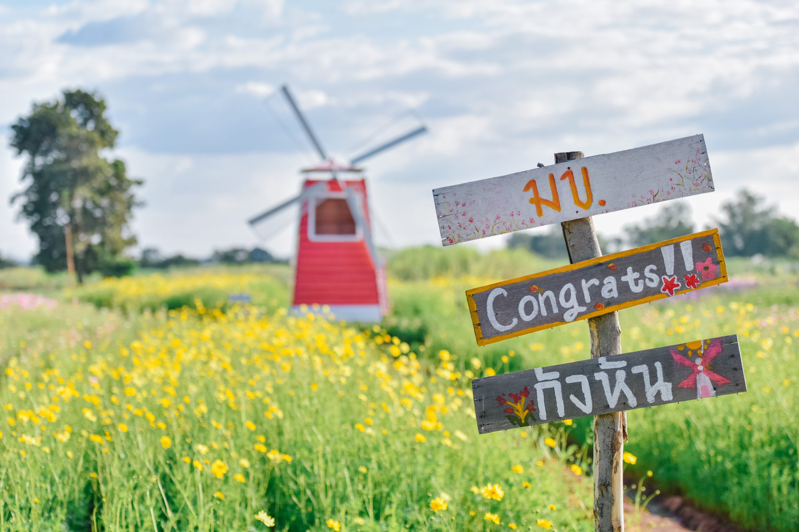 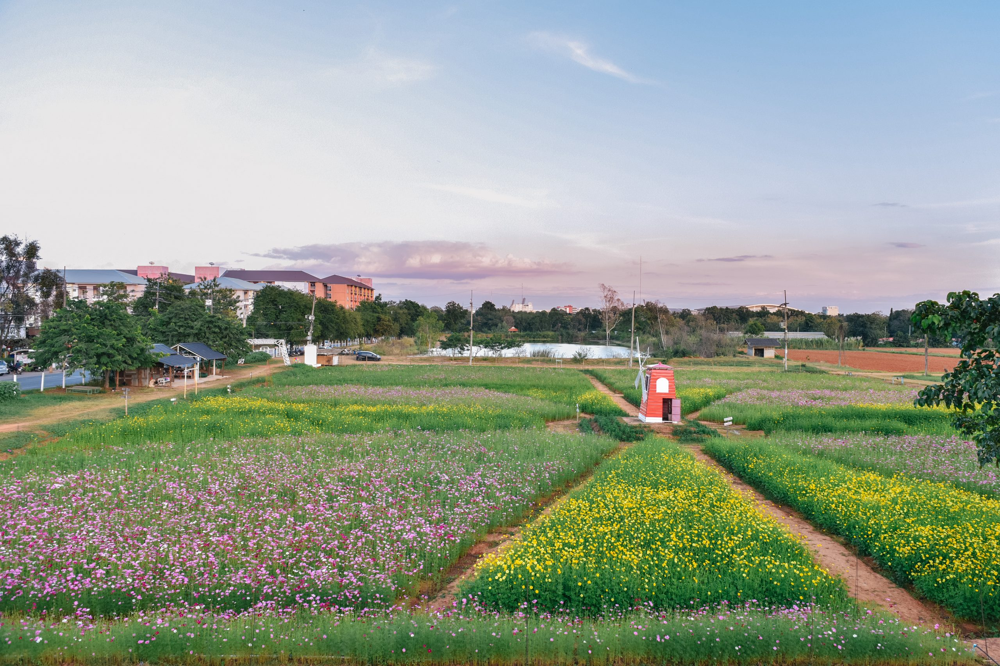2.อุทยานสวนเกษตร (สวนเกษตร มข.)
แหล่งเช็กอินยอดฮิตของนักศึกษาและนักท่องเที่ยว บรรยากาศโล่ง โปร่ง ลมเย็น เหมาะกับการถ่ายรูปสุด ๆ โดยเฉพาะช่วงเย็นที่พระอาทิตย์กำลังตก จะได้วิวท้องฟ้าสวยมาก
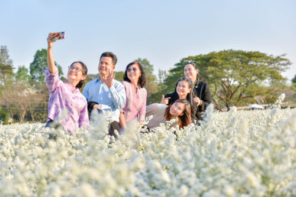 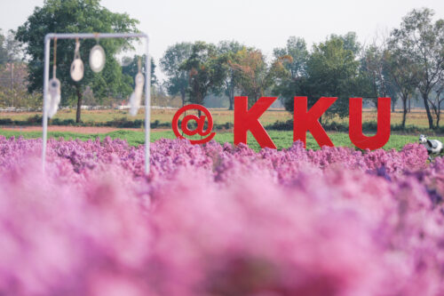3.บึงศรีฐาน
แลนด์มาร์กยอดนิยมของคนมข. จุดเด่นคือวิวบึงกว้างใหญ่ ลมเย็น ๆ ตลอดวัน ตอนเย็นจะมีคนมาวิ่ง ออกกำลังกาย หรือมานั่งดูพระอาทิตย์ตกริมบึง ร้านอาหารรอบบึงก็มีเยอะ บรรยากาศดี เหมาะสำหรับชิลหรือถ่ายรูปมาก ๆ
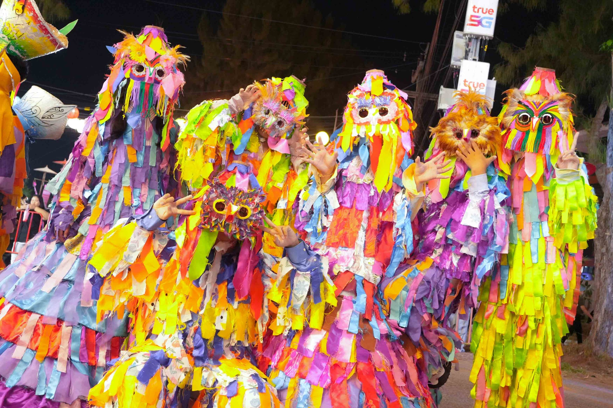 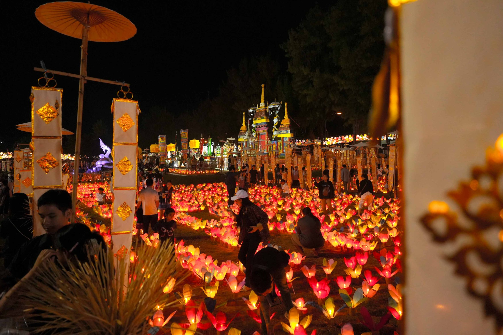 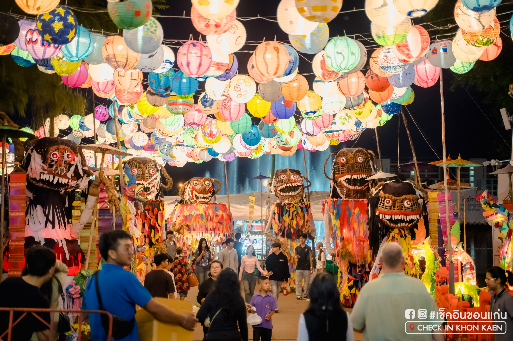4.หอศิลปวัฒนธรรม มข.
แหล่งรวมงานศิลปะหลากรูปแบบ ไม่ว่าจะเป็นนิทรรศการภาพวาด งานประติมากรรม งานออกแบบ หรือกิจกรรมศิลป์ใหม่ ๆ ผลงานจากศิลปินดัง นักศึกษา และแขกรับเชิญหมุนเวียนกันมาแสดงอยู่เรื่อย ๆ สายอาร์ตต้องไม่พลาด อีกทั้งยังเป็นจุดถ่ายภาพที่ดูมินิมอลและเก๋มาก
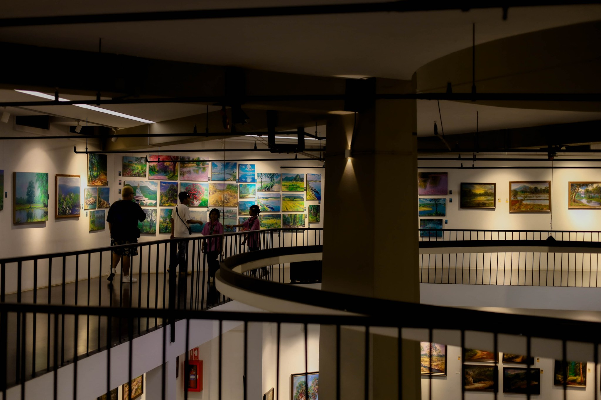 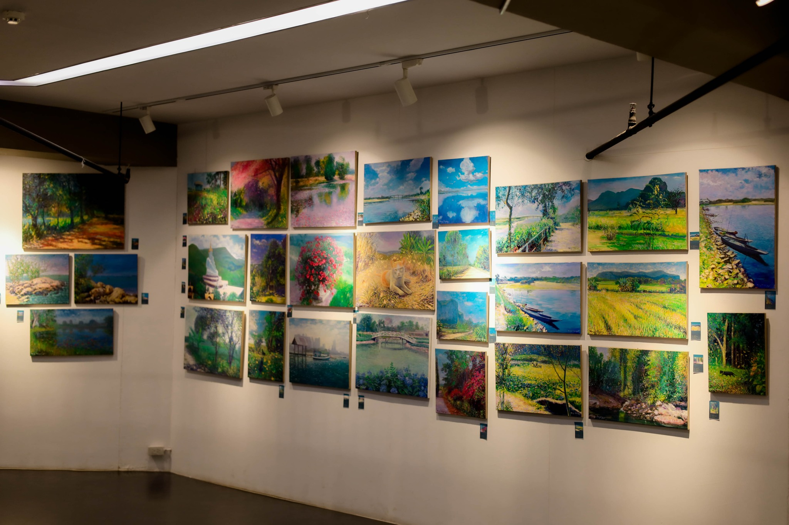 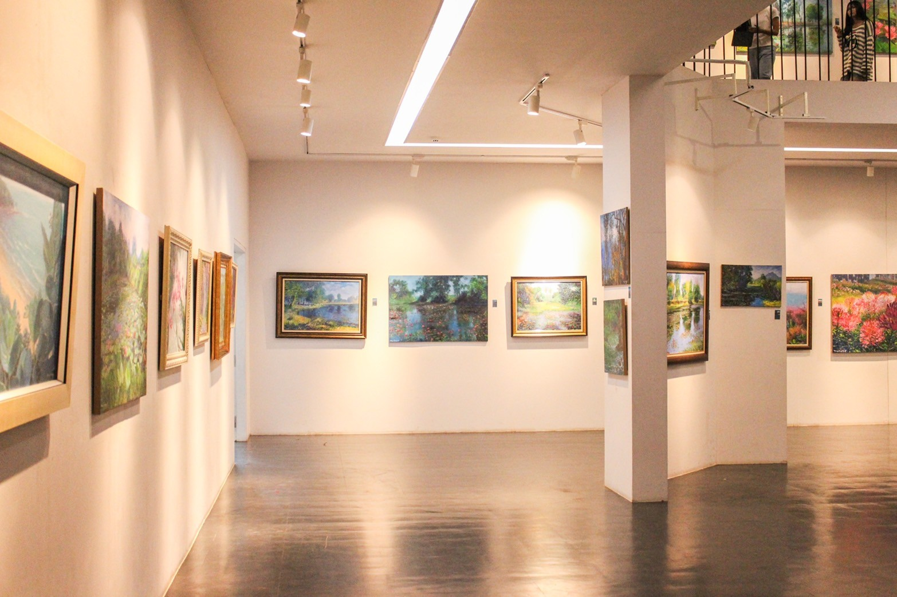